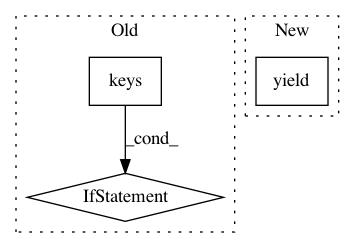

0dc35036c7390636f71c5944d6fec8c2a0111fb3,torch_geometric/utils/data.py,Data,__iter__,#Data#,18
Before Change
self.pos = pos
def __iter__(self):
for key in self.__dict__.keys():
if getattr(self, key) is not None:
yield key, getattr(self, key)
def __call__(self, *props):
props = self.__dict__.keys() if not props else props
for key in props:
if getattr(self, key) is not None:
After Change
yield key, getattr(self, key)
def __iter__(self):
yield self()
@property
def num_nodes(self):
for _, value in self("x", "pos"):
In pattern: SUPERPATTERN
Frequency: 3
Non-data size: 3
Instances
Project Name: rusty1s/pytorch_geometric
Commit Name: 0dc35036c7390636f71c5944d6fec8c2a0111fb3
Time: 2018-04-18
Author: matthias.fey@tu-dortmund.de
File Name: torch_geometric/utils/data.py
Class Name: Data
Method Name: __iter__
Project Name: markovmodel/PyEMMA
Commit Name: 13aa194e1878e7268fcd338c4c6f6cf479a9459f
Time: 2018-06-18
Author: m.scherer@fu-berlin.de
File Name: pyemma/util/contexts.py
Class Name:
Method Name: settings
Project Name: dpressel/mead-baseline
Commit Name: 715269b0a1e79025018f3f22cd972a714b59f4fb
Time: 2021-01-15
Author: dpressel@gmail.com
File Name: api-examples/transformer_utils.py
Class Name: MultiTFRecordLoader
Method Name: __iter__